Croatia - July 2009
Ho hum. Same old mediterranean paradise as usual, in the family beach house!
This year the boys' Spanish cousin Adela came to visit. We then escaped to the idyllic island of Mljet (historic Mileta, where Odysseus took a seven year break on his travels) for a few days.
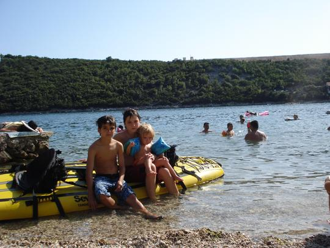
Taking Adela on the kayak
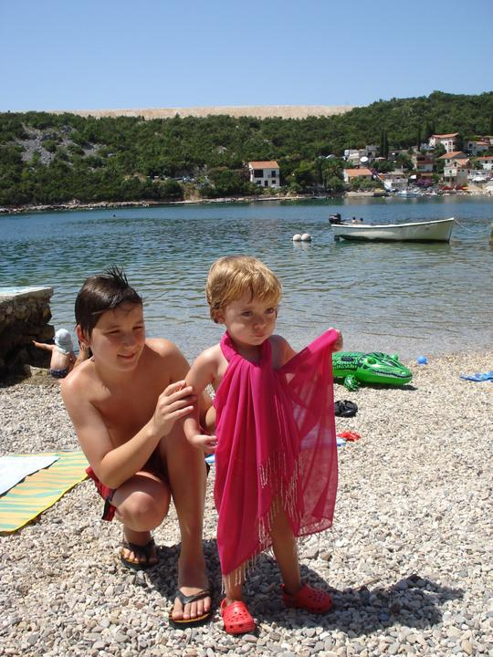
Fashion show on the beach
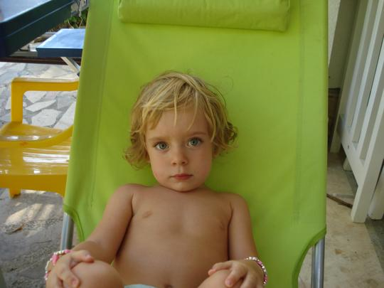
Before she was famous...
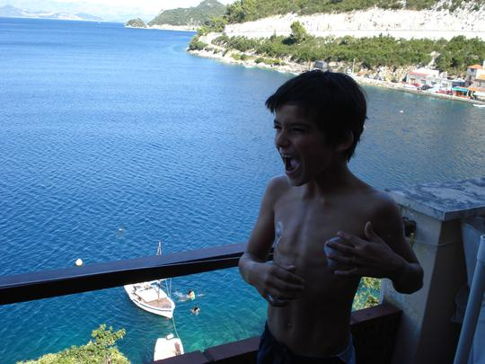
View from our balcony in Mljet
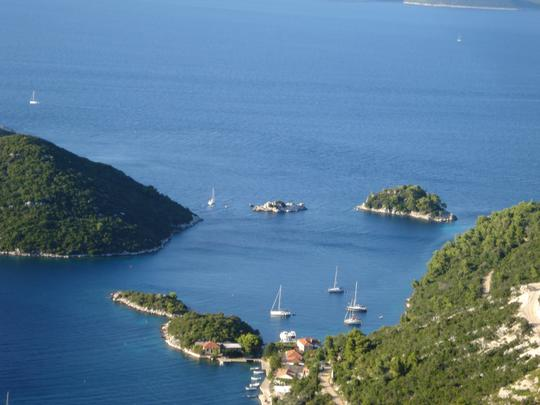
The island has a dozen perfect harbours
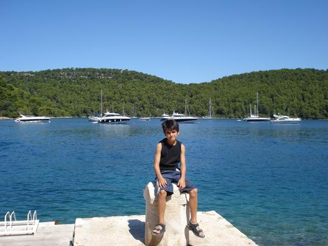
Why can't we have a yacht like that?
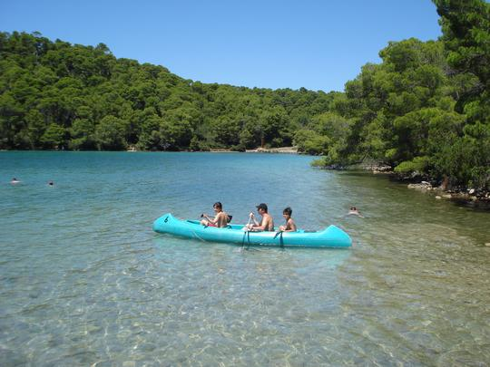
The lake inside the island
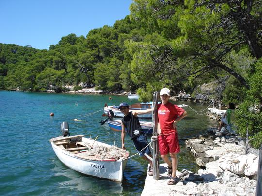
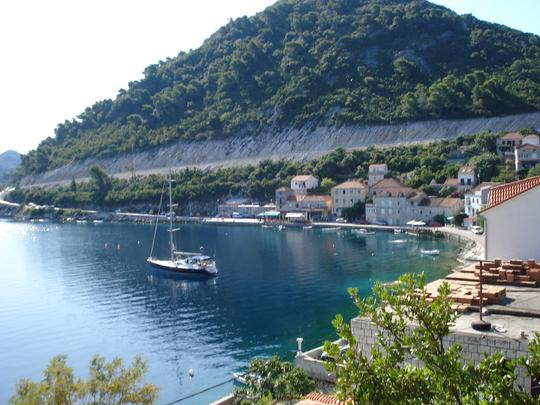
Idyllic view from our apartment in Mljet
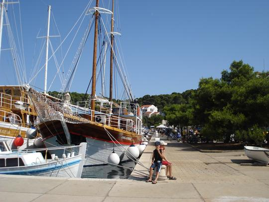
Boat dock at Pomena on Mljet
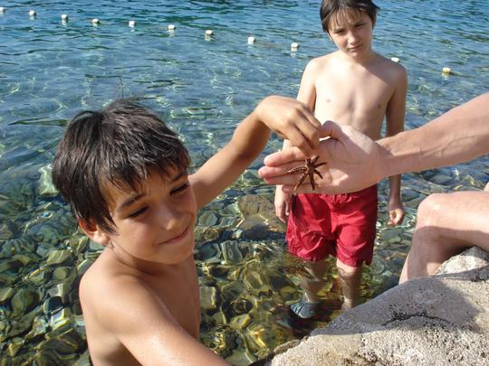
Starfish on the seabed
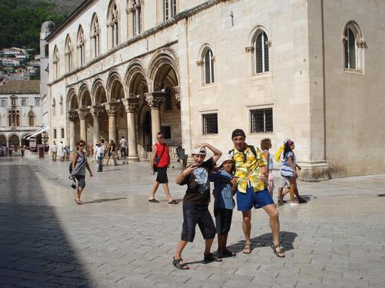
Chavs hit Dubrovnik
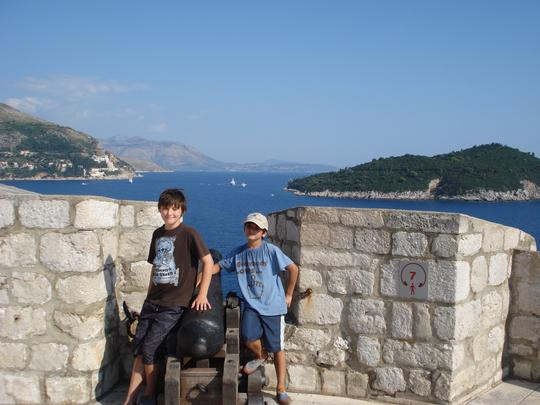
On top of the City walls
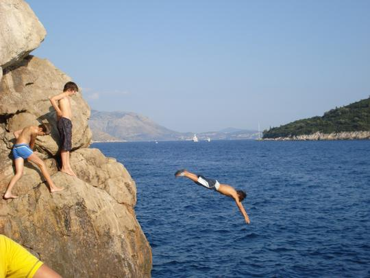
Dubrovnik Old Town is great for swimming and diving - we ducked through a hole in the wall and found a café and jumping spot...
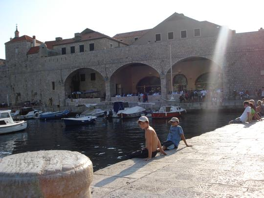
Dubrovnik old town harbour
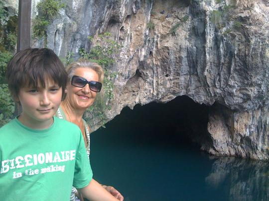
The cave at Buna spring, near Mostar - Tim and his granny
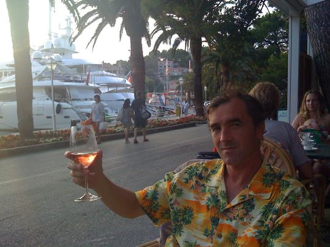
Relaxing in Cavtat harbour - perfect end to the holiday...